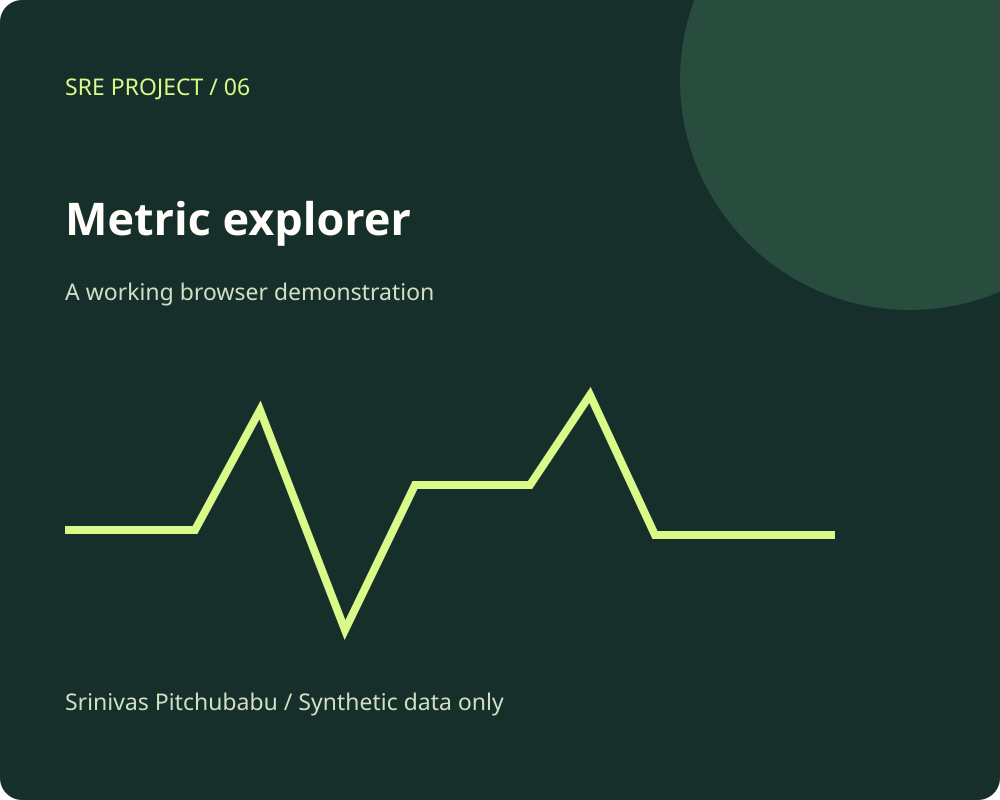

Application Metrics Explorer / Public edition
Turn measurements into questions.
Compare fictional service measurements over time and see how an alert threshold changes the interpretation.
Metric aggregationTime windowsAlert design

Explore the implementation
A small system you can inspect.
CPU, memory, and error-rate views
Adjustable threshold
Sample table and CSV export
Try this.
Compare the worker and API services. Adjust the CPU threshold and inspect the count of samples above it.
The browser uses deterministic synthetic interval measurements. CPU and memory are gauge samples; error rate is errors divided by requests. This is not a live collector or a capacity recommendation.